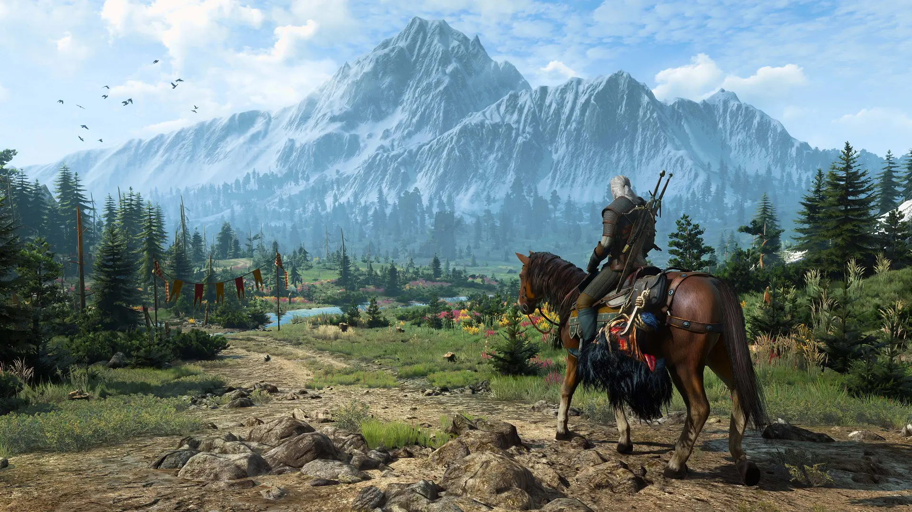
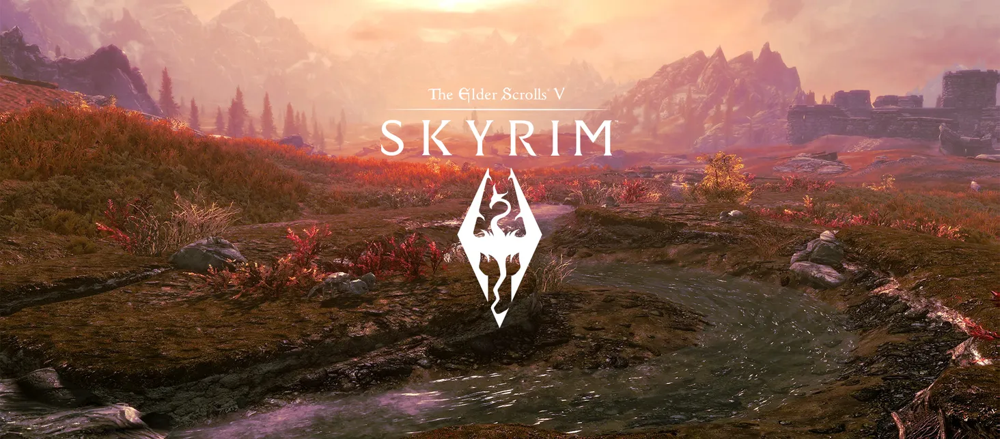
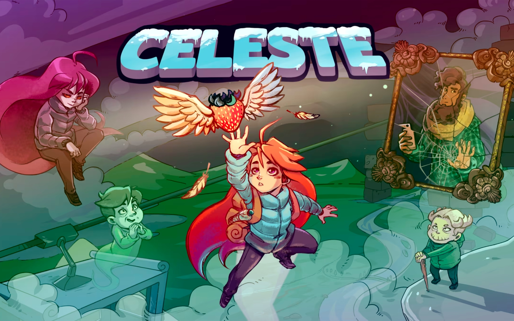

Wiedźmin 3: Dziki Gon
Wiedźmin 3: Dziki Gon (ang. The Witcher 3: Wild Hunt) – trzecia odsłona serii gier komputerowych Wiedźmin, opowiadającej historię Geralta z Rivii, studia CD Projekt RED. Historia gry toczy się po wydarzeniach z drugiej części. Fabuła skupia się głównie na dwóch wydarzeniach – inwazji Nilfgaardu na Północne Królestwa oraz misji Geralta, polegającej na pozbyciu się Dzikiego Gonu.

The Elder Scrolls V: Skyrim
Zrealizowana z dużym rozmachem gra action-RPG, będąca piątą częścią popularnego cyklu The Elder Scrolls. Produkcja studia Bethesda Softworks pozwala graczom ponownie przenieść się do fantastycznego świata Nirn. Akcja The Elder Scrolls V: Skyrim osadzona została 200 lat po wydarzeniach przedstawionych w The Elder Scrolls IV: Oblivion. Główny bohater jest jednym z ostatnich łowców smoków (dovahkiin).

Celeste
Gra stawia przed Madeline, główną bohaterką gry – wyzwanie w postaci wspinaczki na szczyt tytułowej góry. Madeline wspina się, aby udowodnić samej sobie, że potrafi. Bohaterka cierpiąca na ataki paniki, stany lękowe i kliniczną depresję liczy, że zdobycie szczytu pozwoli jej całkowicie pozbyć się negatywnych myśli, ale podświadomie traktuje też wyprawę bardziej jako ucieczkę przez problemami. Sęk w tym, że Celeste to gra nie tylko opowiadająca o wspinacze, a wspinaczka sama w sobie.
Ankieta preferencji
Podziel się swoimi ulubionymi grami i platformą. Twoje odpowiedzi zostaną zapisane w przeglądarce.